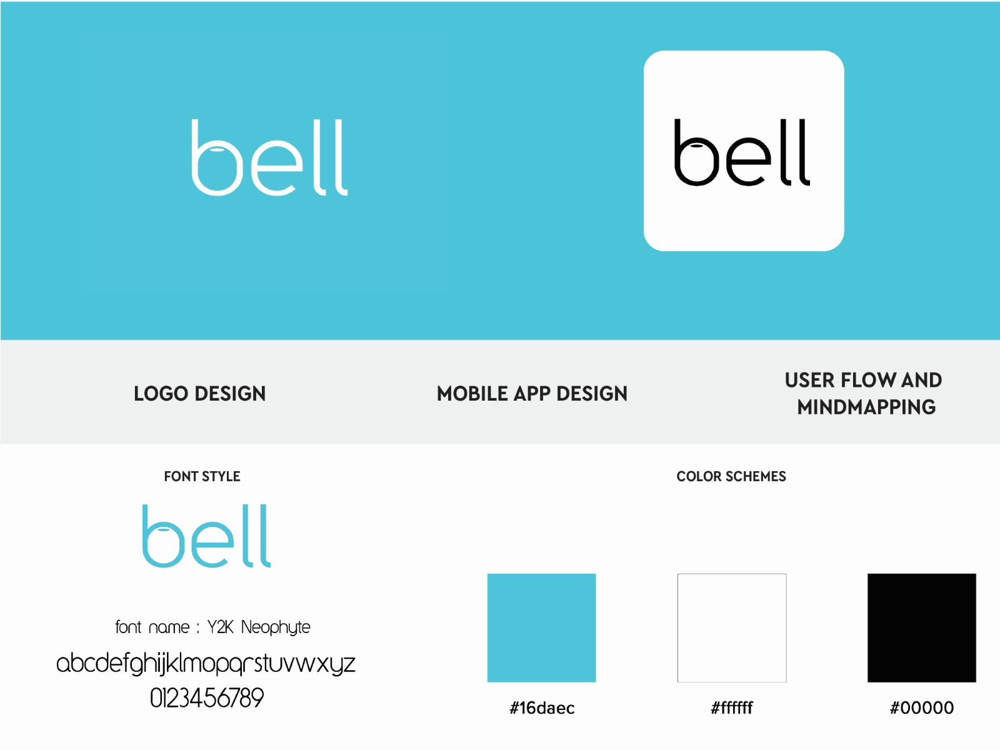
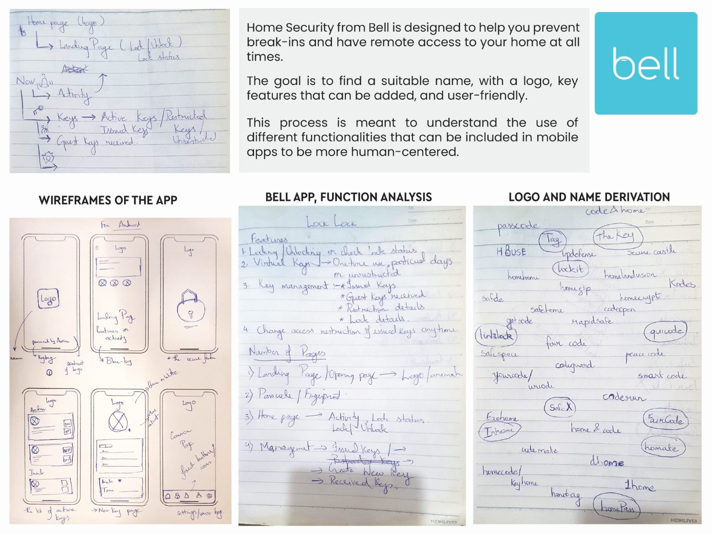
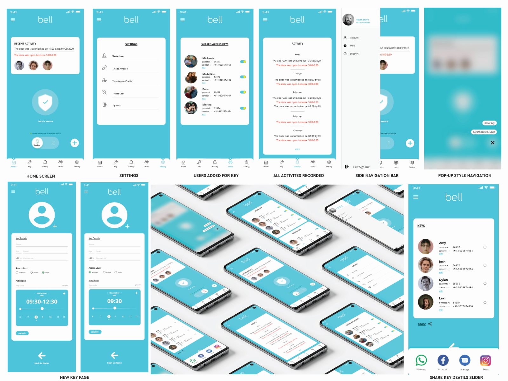

Bell
Home Security
Home security from Bell is designed to help you prevent break-ins and have remote access to your home at all times. The goal was to find a suitable name, with a logo, key features that could be added, and a user-friendly interface.
Start from what the app should do, not what it should look like.
The exercise was explicitly framed as an enquiry: to understand the use of different functionalities that can be included in mobile apps to be more human-centred. So the process runs the other way round from most identity work — function analysis and name derivation are worked out on paper first, and the mark falls out of that rather than leading it.
The name lands on a single domestic object everybody already associates with the front door. The identity stays deliberately plain so the interface can carry the personality.
- WordmarkSet in Y2K Neophyte, lowercase, no icon required.
- PaletteOne cyan against white and black — nothing else.
- Core ideaAccess you can grant and revoke, not just an alarm you can arm.
Three spreads, front to back.



The interface set covers the home screen, settings, users added for a key, the activity record, the side navigation, a pop-up alert style, the new-key page and key sharing — which is where the concept earns its name. A bell is something you let people ring.